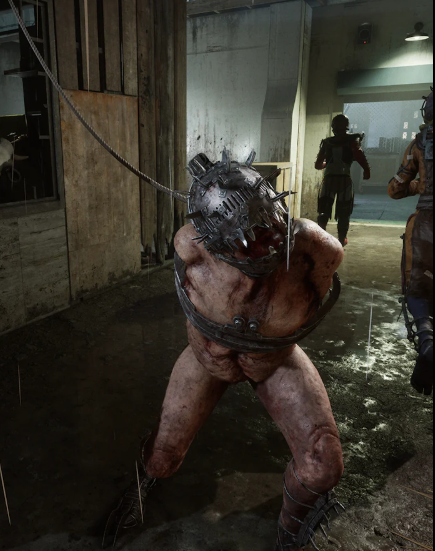
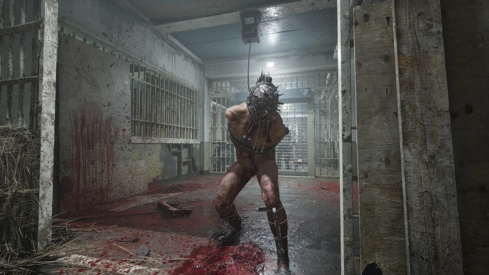
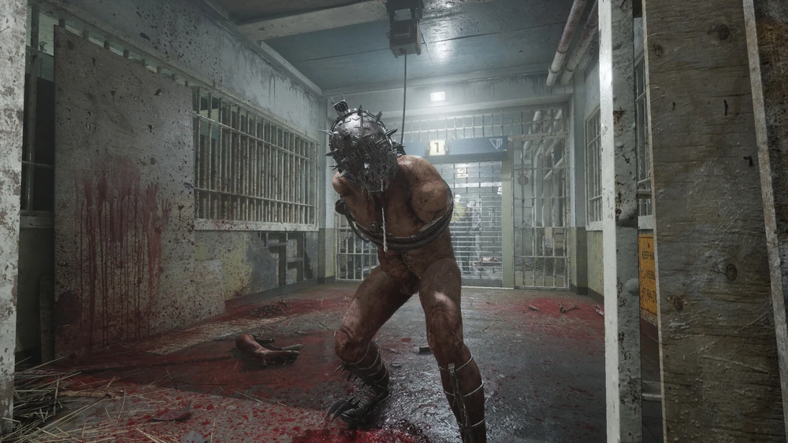
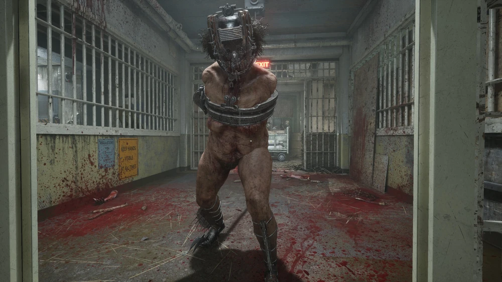
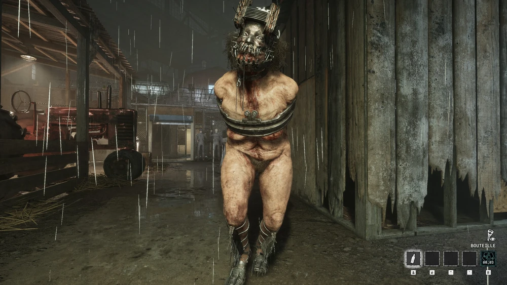

Кусачка
Экс-поп
Локация: Тюремная ферма, Здание суда (Подкупите судей)
Оружие: Механические челюсти
Кусачки — антагонисты в игре The Outlast Trials. Это бывшие заключенные исправительно-трудовой тюрьмы, чьи садистские и саморазрушительные наклонности в сочетании с экспериментами корпорации Murkoff и влиянием сестры Лилии Богомоловой превратили их в диких каннибалов с механическими челюстями, усовершенствованными ступнями и хрупкими поводками.
Описание
Внешний вид Кусачек меняется на протяжении испытаний, поскольку они принимают облик взрослого мужчины или женщины. У них одинаковые протезы ног с лезвиями и «когтями» на конце, а также шипастая металлическая деталь вдоль голени, соединяющаяся с ногой. Их туловище обтянуто металлическим приспособлением, врезающимся в спину, правая сторона которого прикреплена к веревочным поводкам.
У Кусачек ампутированы руки, на туловище виден хирургический шрам, и они носят механическую челюсть и шлем с шипами.
Галерея




Интересные мелочи
- Согласно старым эскизам, изначально предполагалось, что Кусачки будут одеты в смирительные рубашки. От этого варианта, очевидно, отказались в пользу ампутированных рук, что придавало им более извращенный и жуткий вид.
- Согласно их досье «Классификация бывших заключенных», Кусачки по медицинским показаниям лишены способности говорить, издавая лишь животные хрипы и другие звуки. Это может быть следствием увечий, травматической афазии или и того, и другого. Однако отмечается, что Murkoff намеревался подвергнуть их словесным нарушениям, но, по-видимому, не уверен, достаточно ли сильно повреждены Кусачки, чтобы действительно быть неспособными говорить.